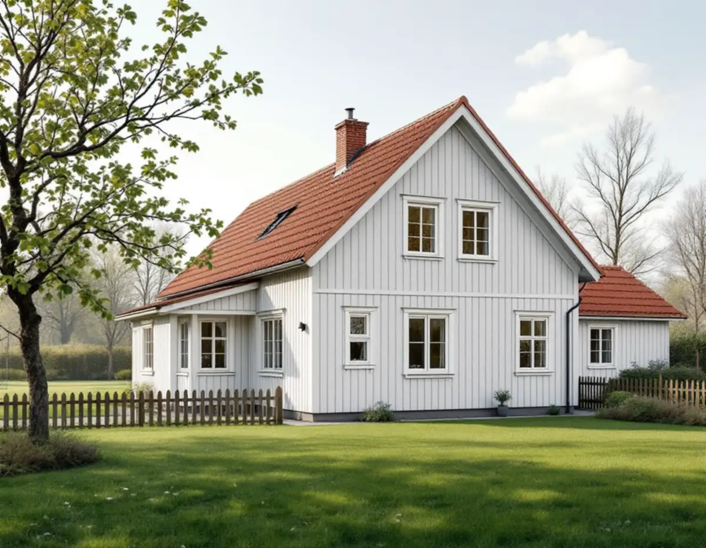
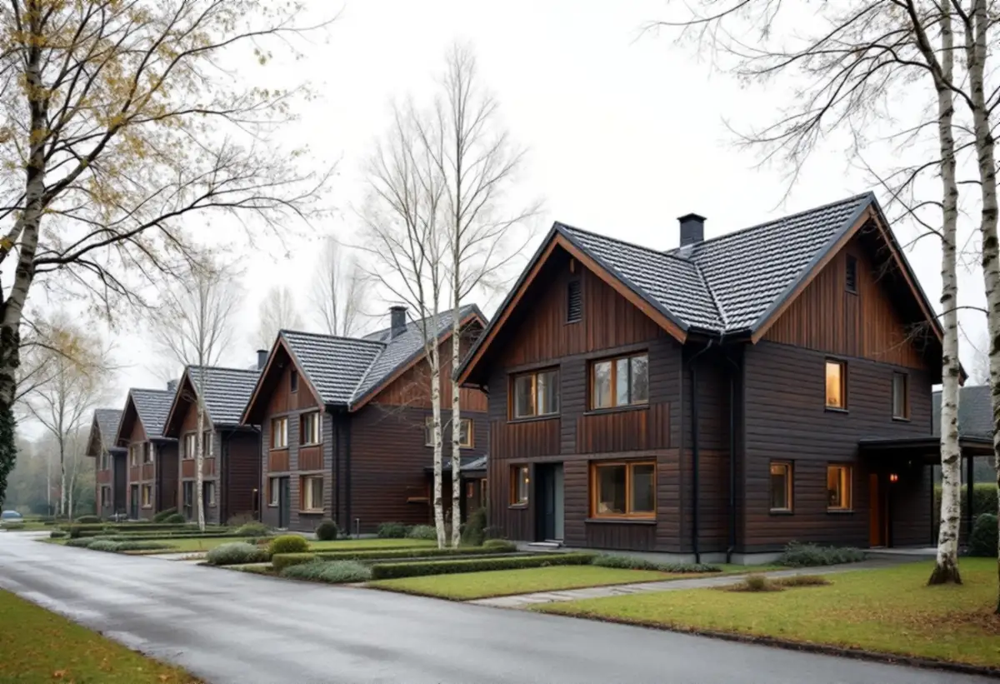

Epok och plan
Vi tar reda på vilken epok huset hör till, vad detaljplanen säger och om området är utpekat.
Huddinge kommun har gett råd för tillbyggnader i småhusområden från tre epoker, och råden gäller även områden som inte är utpekade som kulturmiljö. Ett egnahem från 1920-talet byggs till på ett annat sätt än en kedjehuslänga från 1970-talet. Geal Entreprenad AB bygger till villor och radhus i Huddinge som total entreprenad och lämnar ett skriftligt kostnadsförslag efter ett gratis platsbesök.

Huddinges kulturmiljöprogram delar in småhusen i egnahemsområden från 1910–1940-talen, folkhemsbygget från 1940–1960-talen och rekordårens småhusbebyggelse från 1960–1980-talen. För varje epok finns råd, och programmet skriver uttryckligen att de kan tillämpas på alla småhusområden från perioden i kommunen, även de som inte ingår i ett utpekat kulturmiljöområde.
Programmet påminner också om att all bebyggelse omfattas av varsamhetskraven i plan- och bygglagen. Det betyder att en tillbyggnad som inte kräver lov ändå ska anpassas till huset, och det är de här råden kommunen hänvisar till på sin sida om tillbyggnad, tillsammans med arkitekturstrategin.
Programmet beskriver också hur 1970-talets villor byggdes större och med högre standard än egnahemsrörelsens enkla småhus, och hur arkitektritade villor med portar och fönster i teak och stora glasade partier blev vanligare. Från 1980-talet fick de äldre egnahemsområdena nya tillägg när större tomter styckades av för nya villor. Vilken av de här historierna ditt hus hör till avgör vilka material och proportioner tillbyggnaden bör ha.

Egnahemsområdena har smala gator som följer terrängen, stora tomter och villor som ligger en bit in från vägen med förgårdsmark, fruktträd och buskar mot gatan. Programmet visar bland annat egnahemshus från 1920-talet längs Byalagsvägen. Villorna har träpanel, enkelt spröjsade fönster och tegeltäckta sadeltak eller brutna tak.
Råden för tillbyggnad är att husens ursprungliga uttryck ska vara vägledande, att tillbyggnaden ska underordna sig den ursprungliga volymen och att sprängning, fyllning och schaktning hålls nere. Programmet anger också att kvarterens mitt, bakom den befintliga bebyggelsen, är mindre känslig för tillägg.
Folkhemsbyggets områden består av små, enhetliga villor och kedje- eller radhus, med tomter som ofta skärmas av mot gatan med låg häck, staket eller mur. Programmet visar villor i Fullersta från 1940-talet och i Fridhem från 1950-talet. Råden är att undvika tillbyggnader mot gatan, att undvika större skärmtak och inglasade uteplatser mot gatan och att inte bygga stora altandäck med höga stödmurar på kuperade tomter.
För rekordårens villor, ofta i grupphusområden med upprepade volymer, gäller liknande: större skärmtak, tillbyggnader och burspråk bör undvikas mot gaturummet. Programmet nämner radhusen från 1960-talet i Jacobslund och de senare radhusområdena i Sörskogen och Utsälje som exempel på epoken. I en sammanhållen länga ritar vi därför tillbyggnaden mot trädgården och i husens eget formspråk.
En tillbyggnad på högst 30 kvadratmeter sammanlagt som inte går över nocken kräver inte bygglov, men Huddinge kommun påpekar att lovbefrielsen ofta inte gäller i områden med riksintressen och kulturhistoriskt värdefulla miljöer. Behövs bygglov vill kommunen normalt ha situationsplan på förenklad nybyggnadskarta, fasadritning med marklinjer, planritning och sektionsritning.
Kommunen skriver att konstruktionsritningar kan behövas vid mer komplicerade tillbyggnader men inte vid en enkel, och att en liten enkel tillbyggnad inte kräver kontrollansvarig. Det du bygger behöver inte ha väggar för att räknas som tillbyggnad – skärmtak, uterum, takkupor och balkonger räknas också. Hur taket på tillbyggnaden ansluts beskriver vi under takbyte i Huddinge.
Vi tar reda på vilken epok huset hör till, vad detaljplanen säger och om området är utpekat.
Huset, tomten, förgårdsmarken och takets höjder mäts upp.
En tillbyggnad som följer programmets råd och underordnar sig huset.
Situationsplan, fasad-, plan- och sektionsritningar när lov eller anmälan krävs.
Ett skriftligt förslag med grund, stomme, tak och invändiga arbeten var för sig.
Vi bygger, ansluter mot det gamla huset och går igenom resultatet med dig.
Tillbyggnad av en villa, ett radhus eller ett kedjehus kan ge rotavdrag. Skatteverket kräver att någon av tillbyggnadens sidor sitter ihop med befintlig yttervägg till minst 75 procent eller att det finns en dörr emellan, och att huset har passerat sina första fem år.
Avdraget är 30 procent av arbetskostnaden och högst 50 000 kr per person och år. Geal drar det direkt på fakturan.
Tomtens terräng och grund, om bygglov och ritningar krävs, hur tillbyggnaden anpassas till husets epok och material, anslutningen mot det befintliga taket och vilka installationer som ska in. Efter ett gratis platsbesök får du ett skriftligt kostnadsförslag.
Mer boyta i samma hus.
Tillbyggnad →Takbyte, takbesiktning och plåtarbeten.
Takläggare i Huddinge →Stuvsta, Snättringe och Skogås.
Takrenovering i Huddinge →Avlopp, egen brunn och ritningar.
Attefallshus i Huddinge →Grannar, tomtgräns och lovärendet.
Byggföretag i Huddinge →Nytt trä i en gammal fasad.
Fasadmålning i Huddinge →Egnahem, grupphus och 70-talsvillor.
Fönsterbyte i Huddinge →Okopplade bågar, tätning och lagning av bottenstycken.
Fönsterrenovering i Huddinge →Slipa golvet och byt ytbehandling.
Golvslipning i Huddinge →Grupphus, egnahem och stugor.
Köksrenovering i Huddinge →Rännor, dagvatten och brutna tak.
Plåtslagare i Huddinge →Tyngre tak, stugor och landsbygd.
Takbyte i Huddinge →Ny tapet på lagad spännpapp.
Tapetsering i Huddinge →Egnahem, grupphus och permanentade stugor.
Badrumsrenovering i Huddinge →Villor, grupphus och fritidshus i Huddinge.
Fasadrenovering i Huddinge →Grupphus, radhus och kedjehus i Huddinge.
Golvläggare i Huddinge →Fasad, fönster och rum i Huddinge.
Målare i Huddinge →Altaner, förråd och gäststugor.
Snickare i Huddinge →Rekordårens hus inifrån och ut.
Totalrenovering i Huddinge →